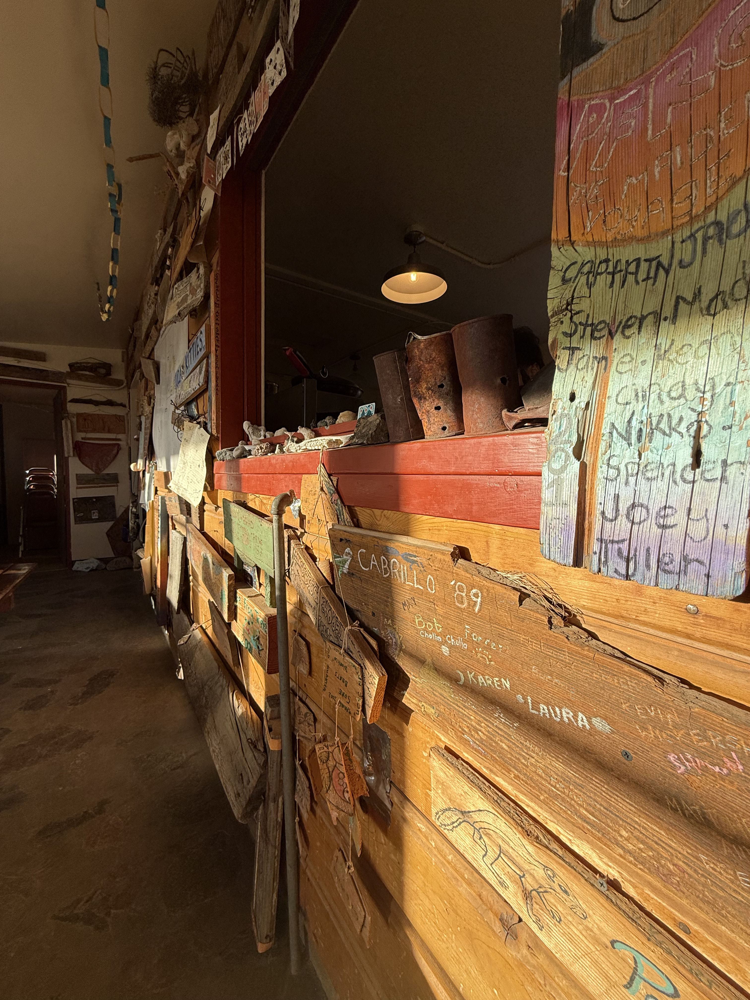
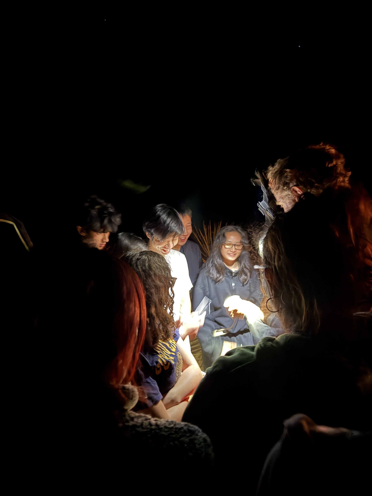
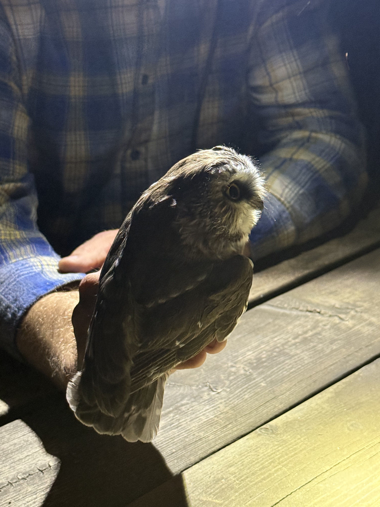

Upper Division Coursework
One of the most exciting parts of studying biology is getting to see how the ideas we learn in lecture actually appear in the real world. Many of my upper division classes combine traditional lectures with hands-on experiences, field observations, and opportunities to interact directly with organisms in their natural environments.
Another important component of modern biology is the ability to work with data. Courses like BIOL 101 focus on developing computational and analytical skills that allow biologists to interpret datasets, visualize biological patterns, and communicate scientific results clearly.
BIOL 101 – Computational Biology and Data Skills
BIOL 101 focuses on developing computational and data analysis skills that are increasingly important in modern biology. In this course we learned how coding can be used to explore biological datasets, visualize patterns, and communicate scientific findings more effectively.
Using tools such as R and Quarto, we practiced organizing datasets, creating figures, and interpreting results from biological studies. These computational approaches allow scientists to analyze complex biological questions, from ecological patterns to evolutionary relationships.
Through projects in this class, I learned how coding can support scientific workflows by helping researchers organize data, generate visualizations, and present results in clear and structured formats.
Project File 3:
View My BIOL 101 Website Project
BIOL 163 – Vertebrate Natural History
Vertebrate Natural History explores how vertebrates behave and survive in their natural environments. We studied morphology, evolutionary relationships, and how anatomical traits help animals adapt to their habitats.
A highlight of the course was participating in overnight field trips to places like the Mojave Desert and the James Reserve in Idyllwild. During nighttime surveys we searched for vertebrates that are most active after dark.
These experiences allowed us to observe animals like owls and snakes in their real environments and connect the anatomy we learned in lecture to how those features help animals survive in nature.


.jpg)


ENTM 100 – General Entomology
General Entomology explores the diversity and biology of insects. In this class we studied insect anatomy, classification, and evolutionary relationships while learning how to recognize the structures that distinguish different insect groups.
One of the most exciting parts of the class was building our own insect collections. Searching for insects in different habitats honestly felt a lot like catching Pokémon except instead of Pokéballs we used nets, collection jars, and specimen boxes.
Each insect we collected became part of a larger scientific collection. We carefully prepared specimens, labeled them with collection data, and identified them using morphological traits like wing patterns, body segmentation, and antenna structure.
BPSC 104 – Plant Diversity
Plant Diversity focuses on the evolutionary history and classification of plants. In this class we explored how plants evolved from early lineages into the wide variety of species that exist today.
By studying plant morphology including reproductive structures, vascular systems, and leaf organization we learned how botanists distinguish between plant groups and trace their evolutionary history.
Looking at plants through this perspective changes the way you see them in everyday life. Instead of simply seeing plants as part of the landscape you begin to recognize the structures and adaptations that reveal their ecological roles and evolutionary relationships.